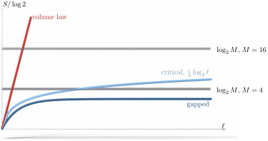

Advanced Quantum Materials 2027 · All lectures · Lecture notes
Session 7. Quantum Many-Body Entanglement and Tensor Networks
7.8 Why MPS work in 1D, and where they stop working
The area law is the missing piece that explains why the ansatz (7.5) is a good one. Let us take an MPS at a given bond, and use it to build the Schmidt decomposition of the state for a division of the system at that bond.
\[|\Psi\rangle = \sum_{\alpha=1}^{M} \lambda_\alpha\, |\alpha\rangle_A \otimes |\alpha\rangle_B,\]
This sum has at most \(M\) terms, because the internal index, also called virtual index, that runs through that bond only takes \(M\) values. Therefore the reduced density matrix \(\rho_A = \sum_\alpha \lambda_\alpha^2 |\alpha\rangle_A \langle\alpha|_A\) has rank at most \(M\). Among all density matrices with rank \(\le M\), the entropy (7.6) is maximal when all the eigenvalues are equal, \(\lambda_\alpha^2 = 1/M\), which gives
\[S \;\le\; \log M. \tag{7.10}\]
In other words, an MPS with bond dimension \(M\) can have an entanglement entropy of at most \(\log M\) across any bond, which grows only logarithmically with \(M\). Let us compare this with (7.9). A 1D gapped ground state has an entanglement entropy that saturates at a finite value, which does not depend on the size of the subsystem, so a moderate and fixed bond dimension is already enough to describe it almost exactly. This is the precise and quantitative reason why matrix product states are such a good ansatz in one dimension, since the area law limits the same quantity that the bond dimension limits. Geometrically, we can think of the full many-body Hilbert space as a large set, and MPS describe only a very small part of it, which is the part of area-law states. This part is reached with a bond dimension that stays moderate (\(M \sim 10\), \(100\)) as long as we stay in the area-law regime. To reach a general state with a volume law, the bond dimension would have to become very large, \(M \sim 2^{L/2}\), which is exponential in \(L\). Figure 7.3 shows this comparison directly. It shows the upper limit \(\log M\) given by (7.10) and the entropy that a gapped, a critical and a general state need when the subsystem grows.

The same argument tells us directly where MPS must fail, which is whenever the true entanglement entropy is larger than what a practical bond dimension can give through (7.10). In practice this happens in four cases. The first case is dynamics over long times, since after a quench the entanglement grows linearly with time and not logarithmically. The second case is systems in more than one dimension, where the length of the boundary in the area law grows with the system size, as we saw in Section 7.7, so \(M\) has to grow too, often exponentially in the linear size of the subsystem. The third case is highly excited states, since the area law is a statement about ground states and not about general eigenstates. The fourth case is, more generally, states far from equilibrium. However, when the physics stays close to a gapped 1D ground state, MPS can be used for more than the ground-state problem. With a higher cost, they can be used for time evolution, excited states and open quantum systems, routinely in 1D and in some cases in 2D.
Notebook check-in: session7.ipynb, “Near linear scaling with system size with matrix product states” (Core) and “The role of the bond dimension in tensor networks” (Core)
In the first exercise you check directly that the cost of the DMRG ground-state calculation in dmrgpy grows linearly with the system size, which is the \(L\times M^2\) scaling of (7.5) and not the \(2^L\) scaling of (7.4). In the second exercise you change the bond dimension and see how the fluctuation of the ground-state energy becomes smaller and then saturates. The point where it saturates is where \(M\) is large enough to satisfy the bound (7.10) for that state.
Notebook check-in: session7.ipynb, “Entanglement entropy of the ground state” (Core), “Size dependence of the entanglement entropy” (Challenge), and “Bond dimension dependence of the entanglement entropy” (Challenge)
With these three exercises you can reproduce Sections 7.5 to 7.8 numerically. First, you compute the entanglement entropy at each bond for the MPS ground state of a Heisenberg chain. Then you check that it grows very little with the system size, which is the 1D area-law saturation of Section 7.6, but this time in a gapless chain and not in a gapped one. Finally, you check that it saturates once the bond dimension is large enough to satisfy (7.10). The quiz of the first exercise also asks you to replace the model with an Ising model and to see how the entropy changes. This is a quick way to see how the area law responds to a really different ground state, which in this case is classical and has zero entanglement.